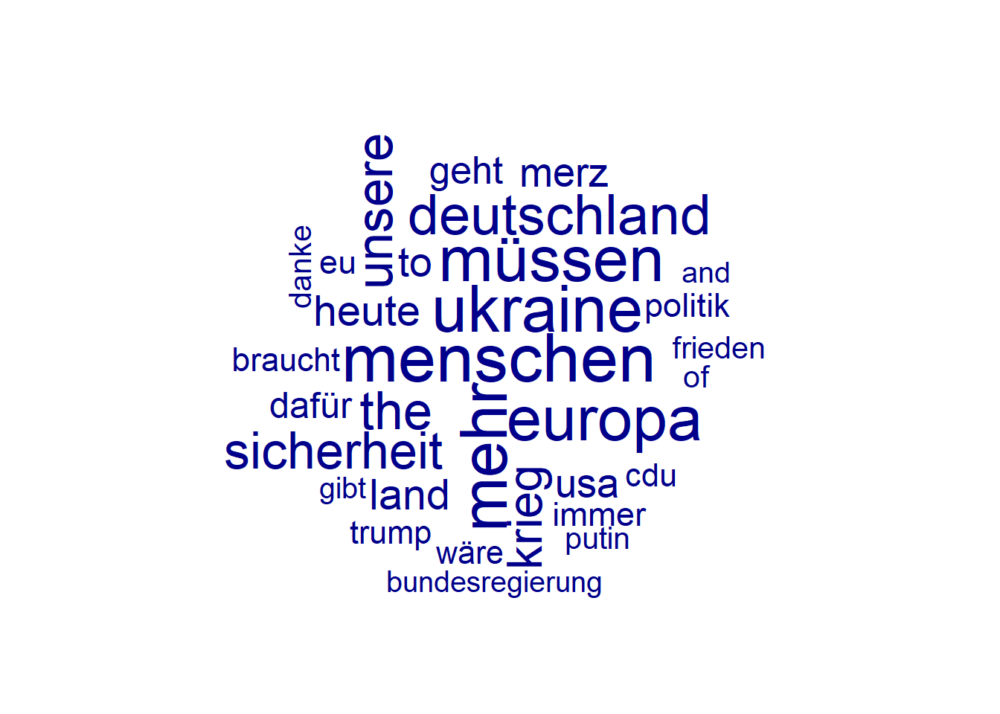
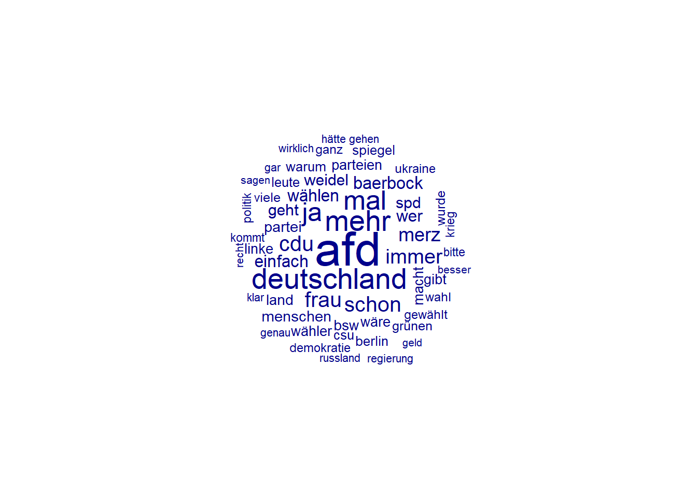
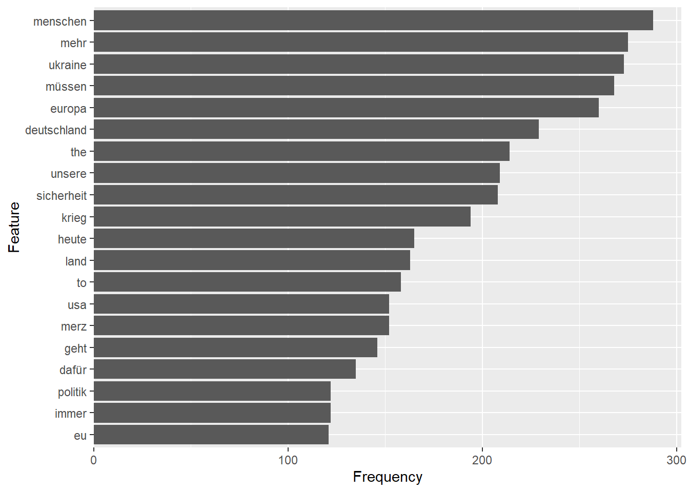
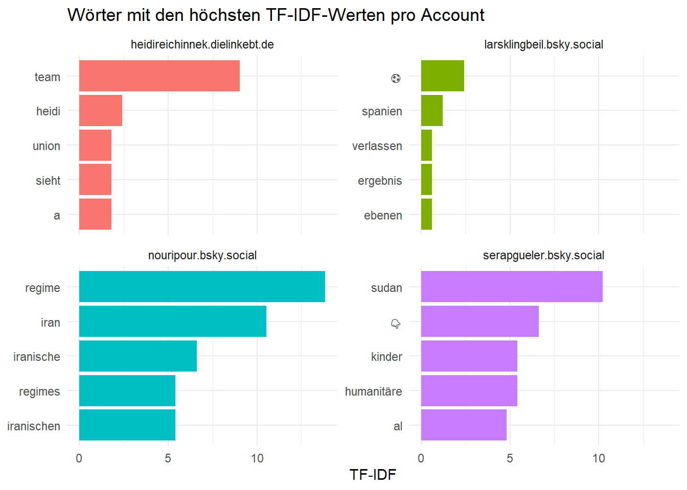
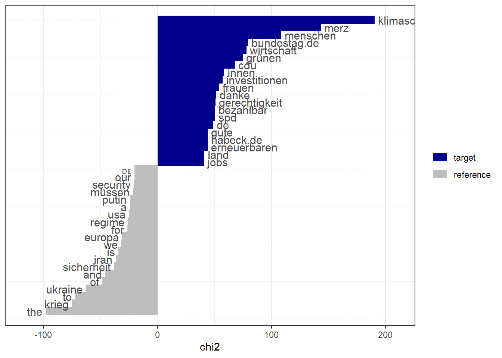
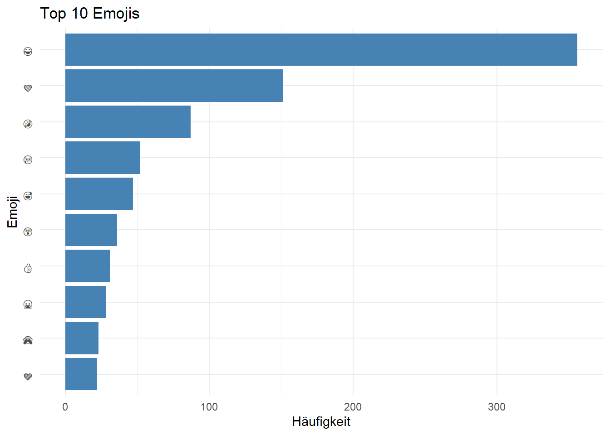
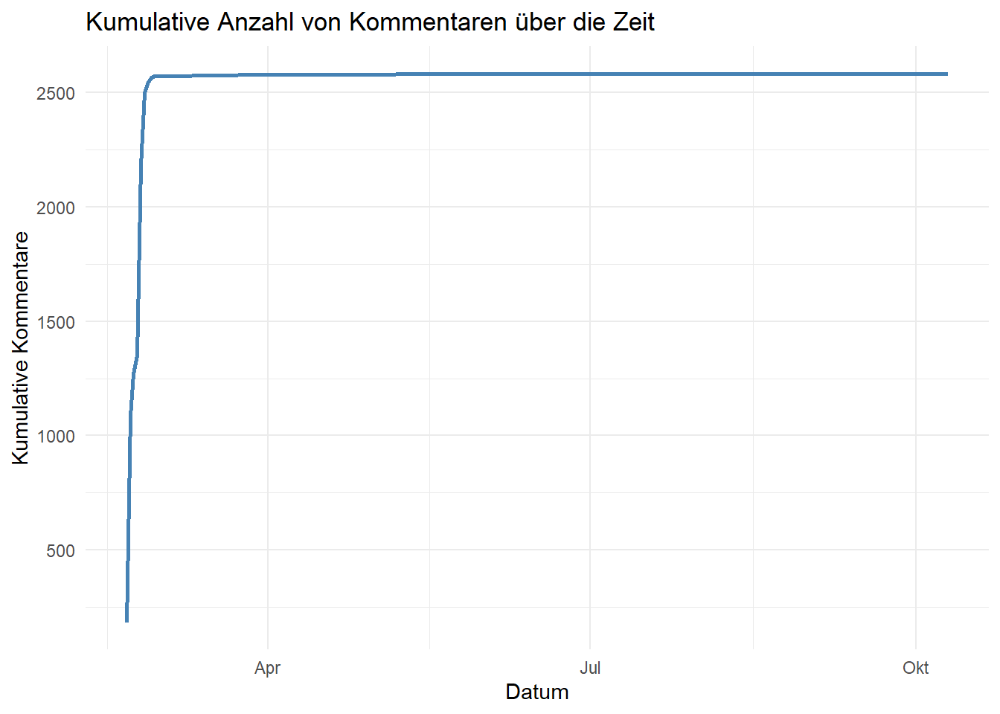

# Pakete laden
library(quanteda)
library(tidyverse)
# Daten einlesen
bs_posts <- read.csv("./data/bluesky_data.csv") # Dateipfad ggf. anpassen
comments_yt <- read.csv("./data/youtube_data.csv") # Dateipfad ggf. anpassen
# Korpus erstellen
bluesky_corpus <- bs_posts %>%
distinct(uri, .keep_all = TRUE) %>% # jeder Post sollte nur einmal im Korpus vorkommen
filter(is_reskeet == FALSE) %>% # keine Reposts
select(uri, cid,
author_handle, author_name,
indexed_at, reply_count, repost_count,
like_count, quote_count,
is_reskeet,
text) %>%
corpus(docid_field = "uri",
text_field = "text")
youtube_corpus <- comments_yt %>%
select(CommentID, VideoID, ParentID,
AuthorDisplayName,
PublishedAt, ReplyCount, LikeCount,
Comment) %>%
corpus(docid_field = "CommentID",
text_field = "Comment")
# Tokenisierung & Bereinigung
tokens_bluesky <- tokens(bluesky_corpus,
remove_punct = TRUE,
remove_symbols = TRUE,
remove_numbers = TRUE,
remove_url = TRUE)
tokens_youtube <- tokens(youtube_corpus,
remove_punct = TRUE,
remove_symbols = TRUE,
remove_numbers = TRUE,
remove_url = TRUE)
# Kleinschreibung & Stoppwörter
tokens_bluesky <- tokens_bluesky %>%
tokens_tolower() %>% # Kleinschreibung
tokens_remove(stopwords("de")) %>% # Entfernung von deutschen Stoppwörtern
tokens_remove("dass") # Entfernung von "dass"
tokens_youtube <- tokens_youtube %>%
tokens_tolower() %>% # Kleinschreibung
tokens_remove(stopwords("de")) %>% # Entfernung von deutschen Stoppwörtern
tokens_remove("dass") # Entfernung von "dass"
# DFM erstellen
dfm_bluesky <- dfm(tokens_bluesky)
dfm_youtube <- dfm(tokens_youtube)16 Descriptive Analysis
Nachdem wir die Daten gesammelt und aufbereitet haben (siehe Kapitel 15), können wir mit der Analyse beginnen. In diesem Abschnitt beschäftigen wir uns mit deskriptiven Methoden, also solchen, die die Daten in ihrer Rohform beschreiben. Dazu gehören z.B. Häufigkeiten von Wörtern, @-Mentions oder Hashtags.
16.1 Setup
Um die Daten analysieren zu können, müssen wir diese sowie die benötigten Pakete laden und wie in Kapitel 15 beschrieben aufbereiten.
Für die deskttriptiven Analysen nutzen wir zudem zwei der Erweiterungspakete von quanteda, nämlich quanteda.textstats und quanteda.textplots. Diese müssen ebenfalls installiert und geladen werden.
install.packages("quanteda.textstats")
install.packages("quanteda.textplots")library(quanteda.textstats)Warning: Paket 'quanteda.textstats' wurde unter R Version 4.5.2 erstelltlibrary(quanteda.textplots)Warning: Paket 'quanteda.textplots' wurde unter R Version 4.5.2 erstellt16.2 Worthäufigkeiten
Mit der Funktion textstat_frequency() aus dem Paket quanteda.textstats können wir die Häufigkeiten von Wörtern in einem Korpus berechnen. Diese Funktion gibt eine Tabelle zurück, in der die Wörter nach ihrer Häufigkeit sortiert sind. Wir können spezifizieren, wie viele Wörter wir in der Tabelle haben wollen, indem wir das Argument n angeben.
dfm_bluesky %>%
dfm_remove(pattern = c("bsky.social",
"@*", "#*")) %>% # Entfernung von Bluesky-Links, Mentions und Hashtags
textstat_frequency(n = 20) # Anzahl der häufigsten Wörter, die angezeigt werden sollen feature frequency rank docfreq group
1 menschen 288 1 258 all
2 mehr 275 2 251 all
3 ukraine 273 3 224 all
4 müssen 268 4 244 all
5 europa 260 5 234 all
6 deutschland 229 6 219 all
7 the 214 7 93 all
8 unsere 209 8 189 all
9 sicherheit 208 9 187 all
10 krieg 194 10 171 all
11 heute 165 11 156 all
12 land 163 12 156 all
13 to 158 13 85 all
14 usa 152 14 130 all
15 merz 152 14 134 all
16 geht 146 16 141 all
17 dafür 135 17 134 all
18 immer 122 18 118 all
19 politik 122 18 115 all
20 eu 121 20 106 allDie Variable frequency gibt an, wie oft ein Wort im gesamten Korpus vorkommt. Die Variable docfreq gibt an, in wie vielen Dokumenten ein Wort vorkommt.
dfm_youtube %>%
dfm_remove(pattern = c("youtube.com",
"@*", "#*")) %>% # Entfernung von YouTube-Links, Mentions und Hashtags
textstat_frequency(n = 20) # Anzahl der häufigsten Wörter, die angezeigt werden sollen feature frequency rank docfreq group
1 afd 411 1 341 all
2 deutschland 230 2 193 all
3 mehr 224 3 195 all
4 mal 206 4 188 all
5 ja 197 5 185 all
6 cdu 156 6 136 all
7 frau 154 7 139 all
8 schon 151 8 139 all
9 immer 140 9 134 all
10 merz 133 10 97 all
11 baerbock 117 11 107 all
12 wählen 112 12 102 all
13 einfach 110 13 101 all
14 wer 105 14 100 all
15 weidel 100 15 97 all
16 geht 98 16 94 all
17 spd 97 17 84 all
18 menschen 91 18 78 all
19 partei 90 19 78 all
20 bsw 87 20 73 all16.2.1 Visualisierung von Worthäufigkeiten
Worthäufigkeiten lassen sich auch in unterschiedlichen Formen visualisieren.
HinweisDatenvisualisierung mit ggplot2
Für die Visualisierung der Daten ntutzen wir neben quanteda.textplots das sehr umfangreiche Paket ggplot2, das auch Teil des tidyverse ist (siehe Kapitel 7). Neben der Dokumentation zum Paket gibt es ausführliche Einführungen u.a. im entsprechenden Abschnitt des Buchs R for Data Science sowie den Büchern The Art of Data Visualization with ggplot2 von Nicola Rennie und Modern Data Visualization with R von Rober Kabacoff, die es auch beide als kostenfreie Online-Versionen gibt.
Eine oft genutzte Form der Visualisierung von Worthäufigkeiten ist die Wortwolke (word cloud). Diese lässt sich mit der Funktion textplot_wordcloud() aus dem Paket quanteda.textplots erstellen. In einer Wortwolke werden die Wörter in unterschiedlicher Größe dargestellt, wobei die Größe eines Wortes proportional zu seiner Häufigkeit im Korpus ist. Je häufiger ein Wort vorkommt, desto größer wird es dargestellt. Wortwolken sind recht anschaulich, um einen ersten visuellen Eindruck von den Daten zu bekommen. Für echte Analysen sind sie aber nur eingeschränkt geeignet, u.a. weil sie schnell unübersichtlich werden. Um die Anzahl der dargestellten Wörter zu reduzieren, kann man die quanteda-Funktion dfm_trim() verwenden. Diese erlaubt es, Wörter anhand der minimalen oder maximalen (Term) Frequency oder Document Frequency (s.o.) zu filtern.
dfm_bluesky %>%
dfm_remove(pattern = c("bsky.social",
"@*", "#*")) %>% # Entfernung von Bluesky-Links, Mentions und Hashtags
dfm_trim(min_termfreq = 100) %>% # Entfernung von Wörtern, die weniger als 100 Mal im Korpus vorkommen
textplot_wordcloud()
dfm_youtube %>%
dfm_remove(pattern = c("youtube.com",
"@*", "#*")) %>% # Entfernung von YouTube-Links, Mentions und Hashtags
dfm_trim(min_termfreq = 50) %>% # Entfernung von Wörtern, die weniger als 50 Mal im Korpus vorkommen
textplot_wordcloud()
Eine alternative und für die Analyse von Textdaten oft besser geeignete Form der Visualisierung von Worthäufigkeiten ist das Balkendiagramm.
freq_bs <- dfm_bluesky %>%
dfm_remove(pattern = c("bsky.social", "dass",
"@*", "#*")) %>%
textstat_frequency(n = 20)
ggplot(freq_bs,
aes(x = frequency, y = reorder(feature, frequency))) +
geom_col() +
labs(x = "Frequency", y = "Feature") +
scale_x_continuous(expand = expansion(mult = c(0, 0.05)))
HinweisMehrsprachige Daten
Wir sehen in den Worthäufigkeiten für die Bluesky-Posts, dass diese offenbar teilweise auch auf Englisch verfasst wurden. Mehrsprachige Daten kommen im Social-Media-Kontext häufig vor. Um mit diesen zu arbeiten gibt es mehrere Optionen.
Man kann alle Texte in eine Sprache übersetzen. I.d.R. ist eine Übersetzung ins Englische am sinnvollsten, weil die meisten Pakete und Modelle für die Analyse damit am besten umgehen können. Für die automatische Übersetzung von Texten in R gibt es mehrere Pakete, die auf APIs von unterschiedlichen Übersetzungstools zugreifen. Zu den bekanntesten Optionen gehören deeplr, googleLanguageR und polyglotr.
Eine weitere Option ist die Erkennung von Sprachen für die Filterung oder separate Analyse. Auch für die Erkennung von Sprachen in Textdaten gibt es verschiedene Pakete in R, wie z.B. cld3, textcat oder fastText (siehe dazu auch das Tutorial von Lampros Mouselimis).
Die dritte Option ist die Nutzung komplexerer Modelle, die auf sogenannten Word Embeddings basieren und mit mehrsprachigen Daten umgehen können, z.B. Multilingual BERT (mBERT) oder XLM-RoBERTa. Diese Modelle können direkt mit Texten in unterschiedlichen Sprachen arbeiten, ohne dass eine Übersetzung notwendig ist. Allerdings erfordern diese Modelle in der Regel auch mehr Rechenleistung und sind komplexer in der Anwendung als die anderen Optionen. Ein R-Paket, dass die Nutzung solcher Modelle ermöglicht, ist text.
16.4 Alternativen zu Worthäufigkeiten
Die Analyse von Worthäufigkeiten in Social-Media-Daten kann nützlich sein, um einen ersten Eindruck von den Daten zu bekommen. Allerdings haben Worthäufigkeiten auch einige Nachteile. So können sie z.B. durch die Präsenz von häufigen, aber wenig aussagekräftigen Wörtern (z.B. “und”, “der”, “die”) verzerrt werden. Die Entfernung von Stoppwörtern (siehe Kapitel 15) sowie die Reduktion der DFM über dfm_trim() sind zwei Möglichkeiten, diesem Problem zu begegnen.
HinweisZipfsches Gesetz
Über alle Sprachen hinweg folgt die Häufigkeitsverteilung von Wörtern in einem großen Korpus dem sog. Zipfschen Gesetzhttps://de.wikipedia.org/wiki/Zipfsches_Gesetz. KVereinfacht gesagt besagt dieses, dass wenige Wörter sehr häufig vorkommen, während die meisten Wörter nur sehr selten vorkommen. Die Formel für das Zipfsche Gesetz lautet: \[\text{word frequency} \propto \frac{1}{\text{word rank}}.\] In Worten ausgedrückt besagt dies, dass die Häufigkeit eines Wortes umgekehrt proportional zu seinem Rang in der Häufigkeitsliste ist. Das häufigste Wort (Rang 1) ist also doppelt so häufig wie das zweithäufigste Wort (Rang 2), dreimal so häufig wie das dritthäufigste Wort (Rang 3) und so weiter.
Das Zipfsche Gesetz hat Auswirkungen auf die Analyse von Textdaten, da es bedeutet, dass die meisten Wörter in einem Korpus eher selten vorkommen. Es ist daher wichtig, bei der Analyse von Textdaten nicht nur auf die häufigsten Wörter zu achten, sondern auch auf die selteneren Wörter, die möglicherweise wichtige Informationen enthalten.
16.4.1 TF-IDF-Gewichtung
Neben der Filterung gibt es jedoch noch eine weitere Option: die Gewichtung von Tokens. Eine häufgig genutzte Methode hierfür ist die sogenannte Term Frequency-Inverse Document Frequency (TF-IDF) Gewichtung. Diese Methode gewichtet Tokens basierend darauf, wie häufig sie in einem Dokument vorkommen (Term Frequency) und wie selten sie im gesamten Korpus vorkommen (Inverse Document Frequency). Tokens, die häufig in einem Dokument vorkommen, aber selten im gesamten Korpus, erhalten eine höhere Gewichtung als Tokens, die häufig im gesamten Korpus vorkommen. Die Formel zur Berechnung von TF-IDF lautet:
\[w_{i,j} = \mathrm{tf}_{i,j} \times \log \left( \frac{N}{\mathrm{df}_i} \right)\]
wi,j: Gewicht des Worts i im Dokument j
tfi,j: Häufigkeit des Worts i im Dokument j (Term Frequency)
N: Anzahl aller Dokumente im Korpus
dfi: Anzahl der Dokumente, in denen das Wort i vorkommt (Document Frequency)
In quanteda kann die TF-IDF-Gewichtung mit der Funktion dfm_tfidf() angewendet werden. Im nachfolgenden Beispiel wird die TF-IDF-Gewichtung auf eine DFM angewendet, die zuvor gefiltert und gruppiert wurde. Zunächst wird die DFM gefiltert, um nur die Posts von vier Politiker_innenn zu behalten. Anschließend werden die Zeilen basierend auf der Dokumentenvariable author_handle gruppiert, um die Posts der einzelnen Politiker_innen zu kombinieren. Schließlich wird die TF-IDF-Gewichtung angewendet, um die Tokens entsprechend ihrer Häufigkeit in den Dokumenten und im gesamten Korpus zu gewichten.
tfidf_bluesky <- dfm_bluesky %>%
dfm_remove(pattern = c("bsky.social",
"@*", "#*")) %>%
dfm_subset(author_handle %in% c("serapgueler.bsky.social",
"larsklingbeil.bsky.social",
"nouripour.bsky.social",
"heidireichinnek.dielinkebt.de")) %>% # Auswahl von Dokumenten (Posts) von vier Accounts
dfm_group(groups = author_handle) %>% # Gruppierung der Dokumente basierend auf der Dokumentenvariable "author_handle"
dfm_tfidf() # Anwendung der TF-IDF-Gewichtung
tfidf_blueskyDocument-feature matrix of: 4 documents, 11,985 features (91.44% sparse) and 3 docvars.
features
docs eindrücklich augen geführt einsatz
heidireichinnek.dielinkebt.de 0 0 0 0
larsklingbeil.bsky.social 0 0 0 0
nouripour.bsky.social 0 0.30103 0.30103 0
serapgueler.bsky.social 0.60206 1.20412 0.30103 2.40824
features
docs freiheitliche demokratie theoretisches ideal
heidireichinnek.dielinkebt.de 0 0.1249387 0 0
larsklingbeil.bsky.social 0 0 0 0
nouripour.bsky.social 0 0.7496324 0 0
serapgueler.bsky.social 0.60206 1.2493874 0.60206 0.60206
features
docs realer kampf
heidireichinnek.dielinkebt.de 0 0
larsklingbeil.bsky.social 0 0
nouripour.bsky.social 0 0
serapgueler.bsky.social 0.60206 0.60206
[ reached max_nfeat ... 11,975 more features ]Um die nach TF-IDF gewichteten Tokens zu explorieren, müssen wir sie in einen data.frame umwandeln.
tfidf_df <- convert(tfidf_bluesky, to = "data.frame")
tfidf_long <- tfidf_df %>%
pivot_longer(
cols = -doc_id,
names_to = "word",
values_to = "tfidf"
) %>%
rename(politician = doc_id)Mit dieser Datenstruktur können wir die Ergebnis auch wieder mit ggplot2 visualisieren. Für die Sortierung der Begriffe nach TF-IDF benötigten wir zusätzlich eine Funktion aus dem Paket tidytext. In diesem Beispiel werden die Top 5 Wörter für jede:n Politiker:in nach ihrer TF-IDF-Gewichtung dargestellt.
library(tidytext)
top_words <- tfidf_long %>%
group_by(politician) %>%
slice_max(tfidf, n = 5, with_ties = FALSE) %>%
ungroup()
ggplot(top_words, aes(x = tfidf,
y = reorder_within(word, tfidf, politician),
fill = politician)) +
geom_col(show.legend = FALSE) +
scale_y_reordered() +
facet_wrap(~politician, ncol = 2, scales = "free_y") +
labs(
title = "Wörter mit den höchsten TF-IDF-Werten pro Account",
x = "TF-IDF",
y = NULL
) +
theme_minimal()
An der Visualisierung sehen wir, dass die Wörter mit den höchsten TF-IDF-Werten für jede:n Politiker_in unterschiedlich sind. Wir können daran also teilweise schon bestimmte Themen erkennen, die für die Posts der jeweiligen Politiker:innen charakteristisch sind. Mit der Identifikation von Themen in Texten befassen wir uns noch eingehender in Kapitel 18 zu Topic Models.
16.4.2 Keyness-Analyse
Die Keyness-Analyse ist eine Methode, um die Wörter zu identifizieren, die in einem bestimmten Korpus oder einer bestimmten Gruppe von Dokumenten im Vergleich zu einem Referenzkorpus oder einer anderen Gruppe von Dokumenten besonders häufig oder selten vorkommen. In quanteda kann die Keyness-Analyse mit der Funktion textstat_keyness() durchgeführt werden. Diese Funktion berechnet die Keyness-Werte für jedes Wort basierend auf der Häufigkeit des Wortes in der Zielgruppe im Vergleich zur Häufigkeit des Wortes in der Referenzgruppe. Die Keyness-Werte können dann verwendet werden, um die Wörter zu identifizieren, die in der Zielgruppe besonders charakteristisch sind.
tstat_key <- dfm_bluesky %>%
dfm_remove(pattern = c("bsky.social",
"@*", "#*")) %>%
textstat_keyness(target = dfm_bluesky$author_handle == "katharinadroege.bsky.social") # Auswahl der Zielgruppe (Posts von Katharina Dröge)
textplot_keyness(tstat_key)
Wer genau hinschaut, sieht, dass eine Keyness-Analyse streng genommen kein rein deskriptives Verfahren ist, sondern eine inferenzstatistische Methode, da sie auf einem statistischen Test basiert (Chi^2-Test), um die Signifikanz der Keyness-Werte zu bestimmen. Dennoch wird sie oft in der deskriptiven Analyse von Textdaten verwendet, um die charakteristischen Wörter einer bestimmten Gruppe von Dokumenten zu identifizieren.
16.5 Weitere deskriptive Analysen am Beispiel von YouTube-Daten
In Kapitel 15 wurden bereits das Paket tubecleanR zur Aufbereitung von YouTube-Daten sowie das zugehörige Tutorial in der KODAQS Toolbox erwähnt. In diesem Abschnitt wollen wir uns ein paar weitere Analysebeispiele anschauen, die darauf aufbauen.
Die zentrale Funktion des Pakets tubecleanr ist parse_yt_comments(), die eine Reihe von Aufbereitungsschritten durchführt (u.a. die Erkennung und Extraktion von URLs, User Mentions und Emojis).
Da das Paket nur auf GitHub verfürbar ist, müssen wir es mit einer Funktion aus dem remotes-Paket installieren (siehe Kapitel 5). Unter Windows benötigen wir dafür zudem die Rtools (siehe Kapitel 1).
Hinweis: Wir können die Funktion install_github aus dem Paket remotes auch nutzen, ohne das Paket zu laden. Dies geht, indem wir vor die Funktion den Namen des Pakets + :: schreiben (siehe dazu auch Kapitel 24).
remotes::install_github("gesiscss/tubecleanR")library(tubecleanR)# Aufbereitung der YouTube-Daten mit der Funktion parse_yt_comments()
cleaned_comments <- parse_yt_comments(comments_yt,
package = "vosonSML") # Angabe des Pakets, mit dem die Daten gesammelt wurden
glimpse(cleaned_comments)Rows: 2,584
Columns: 15
$ VideoID <chr> "5A-ggbcnwcg", "5A-ggbcnwcg", "5A-ggbcnwcg", "5A-ggbc…
$ Author <chr> "@abdikamilnarbekov9828", "@carlesmarch", "@valeriedu…
$ OriginalText <chr> "Die deutsche Präzision kennt keine Grenzen; sie tick…
$ CleanedText <chr> "Die deutsche Präzision kennt keine Grenzen sie tickt…
$ Emoji <I<list>> NA, NA, NA…
$ EmojiDescription <I<list>> NA, NA, NA, …
$ Emoticons <I<list>> NA, NA, NA, NA, NA, NA, :D, NA, NA, NA, NA, NA, N…
$ LikeCount <dbl> 0, 0, 4, 0, 0, 0, 0, 0, 4, 0, 0, 0, 0, 0, 0, 0, 0, 0,…
$ URL <I<list>> NA, NA, NA, NA, NA, NA, NA, NA, NA, NA, NA, NA, N…
$ Timestamps <I<chr>> NA, NA, NA, NA, NA, NA, NA, NA, 1:22, NA, NA, NA, …
$ UserMentions <I<chr>> NA, NA, NA, NA, NA, NA, NA, NA, NA, NA, NA, NA, NA…
$ Published <dttm> 2025-10-10 03:54:46, 2025-03-04 20:17:08, 2025-02-25…
$ Updated <dttm> 2025-10-10 03:54:46, 2025-03-04 20:17:08, 2025-02-25…
$ ParentId <chr> NA, NA, NA, NA, NA, NA, NA, NA, NA, NA, NA, NA, NA, N…
$ CommentID <chr> "UgwiakmTsk6z-aXOB394AaABAg", "UgzciKZHDm2Rn7S77rN4Aa…Eine mögliche Visualisierung der aufbereiteten Daten ist das Plotten der häufigsten Emojis.
cleaned_comments %>%
unnest_longer(Emoji) %>%
filter(!is.na(Emoji)) %>%
count(Emoji, sort = TRUE) %>%
slice_max(n, n = 10) %>%
ggplot(aes(x = reorder(Emoji, n), y = n)) +
geom_col(fill = "steelblue") +
coord_flip() +
labs(title = "Top 10 Emojis", x = "Emoji", y = "Häufigkeit") +
theme_minimal()
Eine weitere Möglichkeit ist die Darstellung der Anzahl der Kommentare über die Zeit.
cleaned_comments %>%
filter(!is.na(Published)) %>%
mutate(date = as.Date(Published)) %>%
count(date) %>%
arrange(date) %>%
mutate(cumulative_comments = cumsum(n)) %>%
ggplot(aes(x = date, y = cumulative_comments)) +
geom_line(color = "steelblue",
linewidth = 1) +
labs(
title = "Kumulative Anzahl von Kommentaren über die Zeit",
x = "Datum",
y = "Kumulative Kommentare"
) +
theme_minimal()